RANCH (ראנץ')
אולי הסוג הפופולארי ביותר והאהוב ביותר, יש הרבה סוגים של בתים מסוג ראנץ, אבל הייחוד של הבתים מסוג זה הוא שיש קומה אחת, דגם זה מאוד פופולארי בקרב משפחות ואנשים מבוגרים.
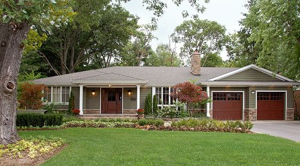כל הידע המקצועי של OSCR GROUP מונגש עבורכם במקום אחד.
אולי הסוג הפופולארי ביותר והאהוב ביותר, יש הרבה סוגים של בתים מסוג ראנץ, אבל הייחוד של הבתים מסוג זה הוא שיש קומה אחת, דגם זה מאוד פופולארי בקרב משפחות ואנשים מבוגרים.
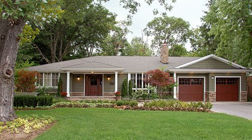סוג בית זה גם נפוץ מאוד בארה"ב, בדרך כלל ישתמשו בחומרים טבעיים בבתים מסוג זה כגון: אבנים,עץ ולבנים. סימן ההיכר של סוג בית זה הוא הגג השפיצי והמרפסת הקדמית הגדולה שבדרך כלל תחובר לשני עמודים, אי אפשר לפספס את החזית של הבאנגלו. לרוב תיהיה קומה אחת בבית מסוג באנגלו אך יש בתים עם שתי קומות גם.
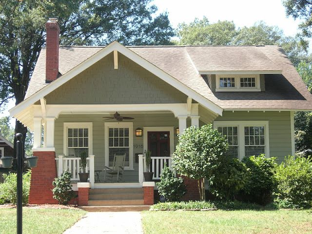מאוד קל לזהות סוג בית זה לפי ה-DORMER והגג עם השיפוע החד מאוד. הדורמר הוא החלון הקטן בקומה השניה. ברוב הבתים תיהיה גם ארובה (chimney) גדולה.

בתים מהתקופה הויקטוריאנית 1830-1910, בתים אלו נראים ממש כמו ארמון וכאשר הם משומרים במצב טוב הם מהממים ביופיים. כדאי לבדוק אם הבית נמצא בשכונה לשימור ואם כן יש לבדוק האם הבית עצמו הוא גם לשימור. במידה וכן עליכם לקחת בחשבון שתיהיו מאוד מוגבלים בשינויים שתוכלו לבצע בבית וועדה מקומית תצטרך לאשר את השיפוץ שלכם, מה שאומר שהתהליך יהיה ארוך יותר, יקר יותר ומומלץ לעבוד רק עם קבלן שמנוסה בשיפוץ בתים לשימור. בהחלט לא מתאים לשיפוץ ראשון :)

בתים מודרנים הם בתים שנבנו בעשרות השנים האחרונות, לבתים כמובן מראה מודרני והפוקוס הוא על הפונקציונאליות של הבית לטובת דיירי הבית. החומרים בדרך כלל יהיו חסכוניים באנרגיה, חלונות גדולים כדי להכניס הרבה אור הביתה וגם נסיון להכניס את החוץ לתוך הבית. לבתים מודרנים יש קוים נקיים והם נבנים מחומרים שמחזיקים מעמד זמן רב.
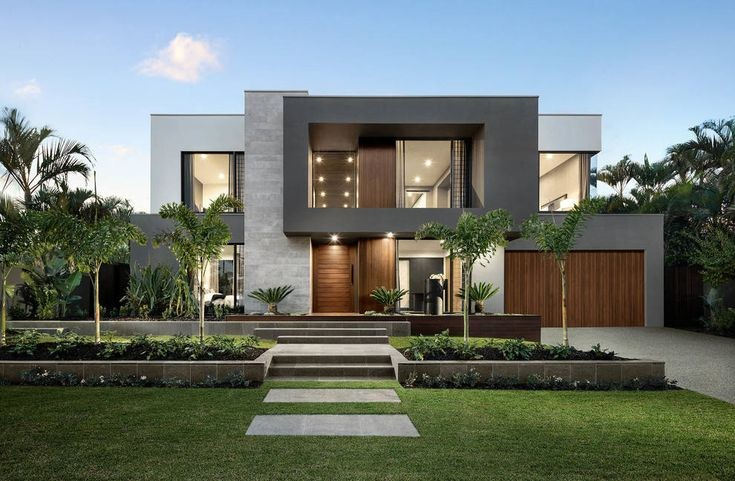אלו בתים מרשימים ביופיים מתקופת ההתיישבות בארה"ב ויכולים להגיע עד לשנת 1600. תוכלו לזהות אותם לפי החלונות הסמטריים בחזית, לרוב יהיו מספר דורמרס ועמודים בכניסה לבית. בדרך כלל אלו יהיו בתים גדולים מאוד.

הסוג הנפוץ ביותר בבתי מגורים בארה"ב והגג שבדוגמה בסרטון זה. הסיבה שזה הגג הנפוץ ביותר היא שהוא זול ואורך החיים שלו הוא 15-20 שנה. כפי שאמר הקבלן בסרטון, גג מסוג זה "צפוי" להחזיק מעמד כ-30 שנה, אך בפועל הוא יחזיק קרוב יותר ל-15 שנים, כתלות באזור, תנאי מזג אויר ותחזוקה שתבוצע לגג במידת הצורך.
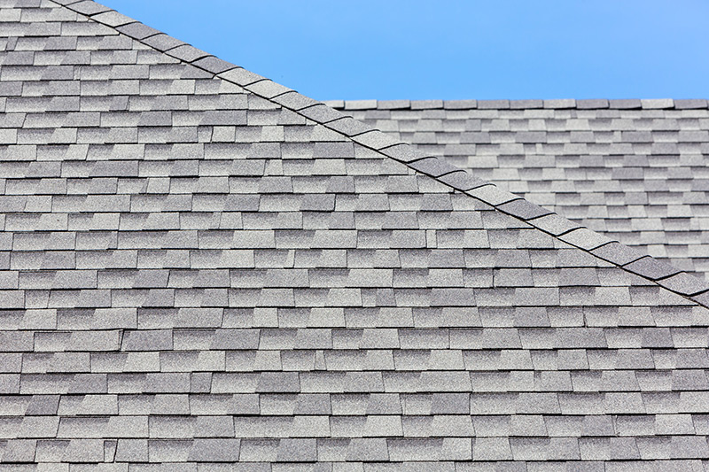גג רעפים, מוסיף הרבה אופי לבית אבל קחו חשבון שלמרות שהוא עמיד יותר מגג אספלט "רגיל" , גג רעפים צפוי להחזיק 50-70 שנה, הוא גם שביר יותר ולכן אינו מתאים לאזורים עם מזג אויר משתנה ובמיוחד אינו מתאים לאזורים עם תנאי מזג קשים שבהם יש סופות.
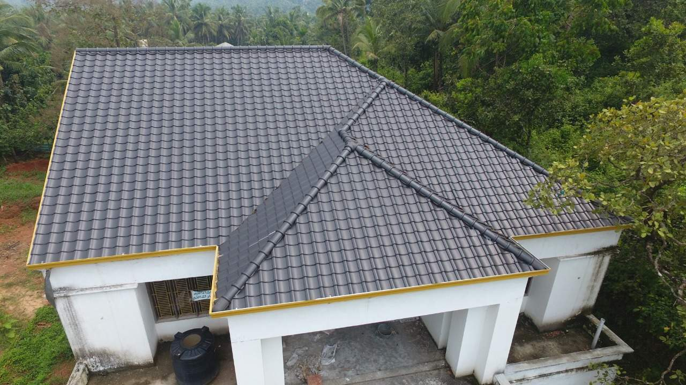אם אתם משפצים / בונים בית יוקרתי יכול להיות שתרצו להשתמש בחומר זה, סלייט רוף יכול להחזיק גם 100 שנה והוא מאוד יפה, אבל קחו בחשבון שהוא מאוד יקר ביחס לגג "רגיל" כמו האספלט, הוא מאוד כבד, נשבר בקלות שדורכים עליו, ההתקנה שלו גם תיהיה יקרה ותיהיה חייבת להתבצע על ידי מתקין מנוסה בהתקנת גגות מסוג זה בלבד.

גג שטוח או גג גומי, פחות נפוץ בבתים פרטים , תוכלו לראות אותו בעיקר בגגות שטוחים בדופלקים (2 יחידות) או פורפלקסים (4 יחידות). הגג יחסית יקר ויכול להחזיק עד 50 שנה. תיקונים מאוד מהירים וזולים, תחזוקה מאוד נמוכה וייצור הגג הוא אקולוגי לסביבה ולרוב יכיל גומי ממוחזר.
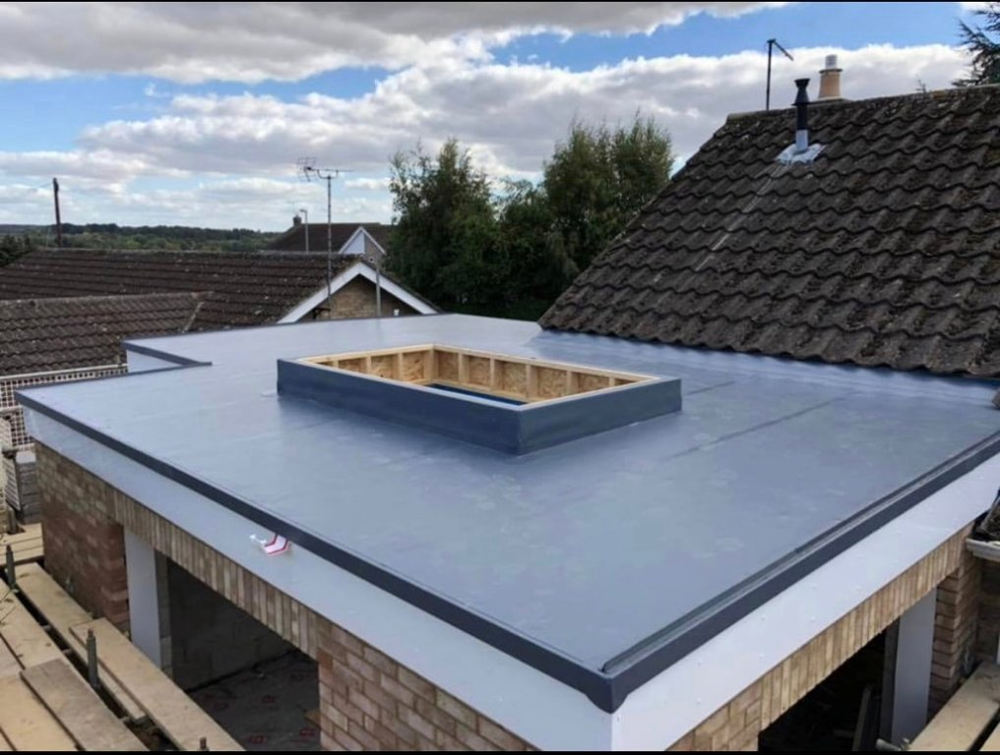גג מתכת - מחזיק בין 40-70 שנה. עמיד לסופות, קל תחזוקה, לא מתלקח בשריפה, גג מתכת הוא ירוק ויכול להוזיל עלויות קירור באזורים חמים ב-10-25 אחוז ומפני שניתן למחזר את הגג הוא גם ירוק לסביבה וניתן לצבוע אותו במקום להחליף אותו. עם זאת, גג מתכת יכול לעלות עד פי 3 מגג אספלט, הוא מרעיש, באיזורים עם מזג אויר משתנה יש לקחת בחשבון הרחבות והתכווצות של החומר ובמקרה של תיקון יש לקחת בחשבון שהתיקון יהיה בצבע אחר (אבל זה נכון לכל סוגי הגגות).
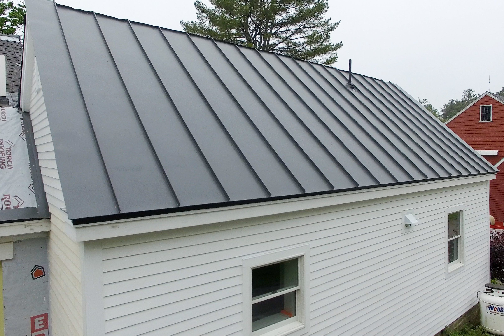סוג זה מאוד פופולארי מפני שהוא זול, עמיד לאורך זמן וקל לתחזוקה. ייתכן ותבדקו נכס עם סוג סיידינג וייניל ובתמונה הוא יראה לכם במצב נורא, עם ירוקת ולעיתים כתמים שחורים (עובש), לרוב הם ירדו בשטיפה בלחץ גבוה והחוץ יראה כמו חדש בעלות של מספר מאות דולרים בלבד. זה סוג של פלסטיק, קל מאוד להרכיב אותו ומכיוון שזה חומר סינטטי יש היום הרבה דגמים של סוג זה כולל דמוי עץ.
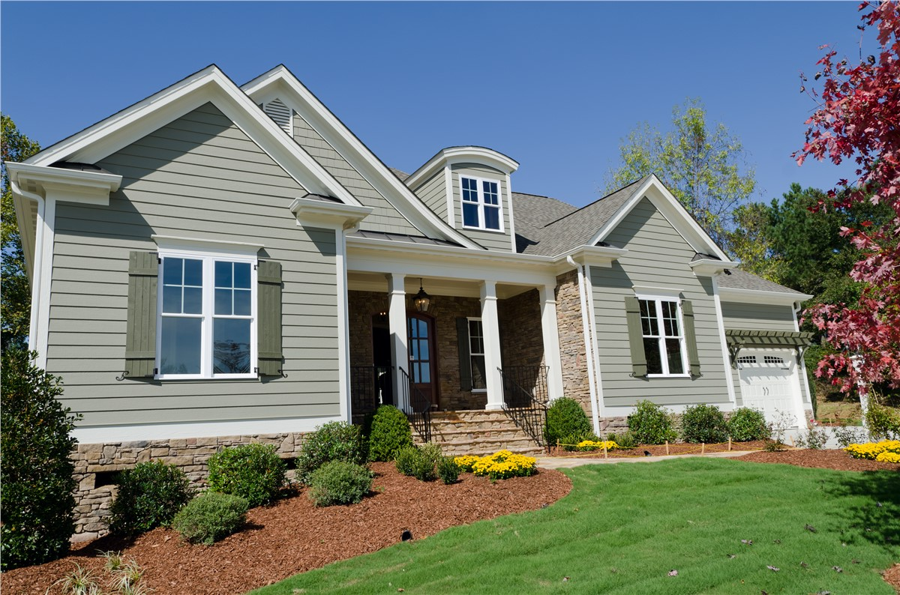חיפוי עץ לבית יכול להיראות מאוד יפה וטבעי, אך קחו בחשבון שעץ באיכות גבוהה יהיה מאוד יקר, יש לתחזק סיידינג מסוג עץ אחת לשנה שנתיים, לשייף ולצבוע צבע שהתקלף.
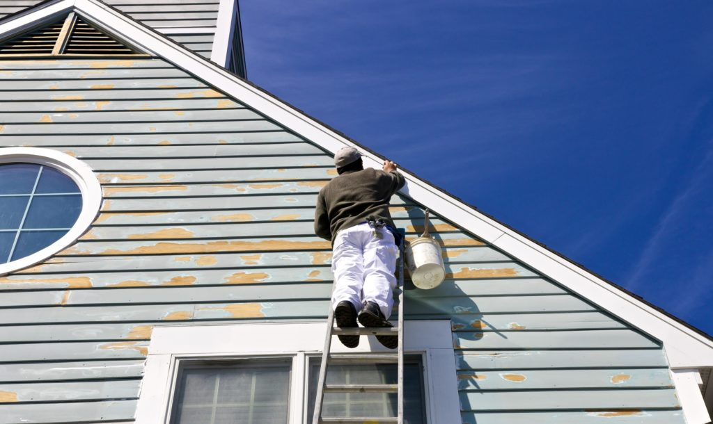שליכט מבודד אשר מכיל אפוקסי. סטאקו נראה מאוד יפה, במיוחד למי שאוהב קוים נקיים והוא יכול להחזיק המון שנים בטיפול נכון, כל זה נכון לאזורים יבשים. פחות מומלץ להשתמש בסטאקו באזורים עם הרבה גשם, למרות שהתקנה נכונה הוא יכול להחזיק מעמד זמן רב.

קל מאוד לזהות את הבתים עם הלבנים האדומות (בדרך כלל יהיו בצבע אדום). לבנים קלים לתחזוקה, מחזיקים מעמד בדרך כלל לאורך כל חיי הבית, ניתן לצבוע אותם במידה ויש תיקונים שלא נראים טוב. סוג זה נחשב יקר יותר כמובן מהסוגים האחרים גם מבחינת עלות החומר וגם מבחינת עלות העבודה. כדאי לבדוק עם מתווך מקומי מה מעדיפים קונים בשכונה ספיצית האם בריק או וייניל, לעיתים יכול להיות משמעותי בשכונות מסויימות.

החלק שפונה החוצה ומקביל לקיר החיצוני של הבית
החלק התחתון ופונה כלפי הרצפה, חלק זה יהיה מאוורר
המרזב שאוגר את מי הגשם מהגג, לרוב יהיה אלומניום

מתחבר למרזב ומוריד המים לקרקע. יכול להתחבר ישירות לצינור הניקוז שהולך לרחוב או לצינור מאריך כדי שהמים יצאו רחוק מהיסודות.
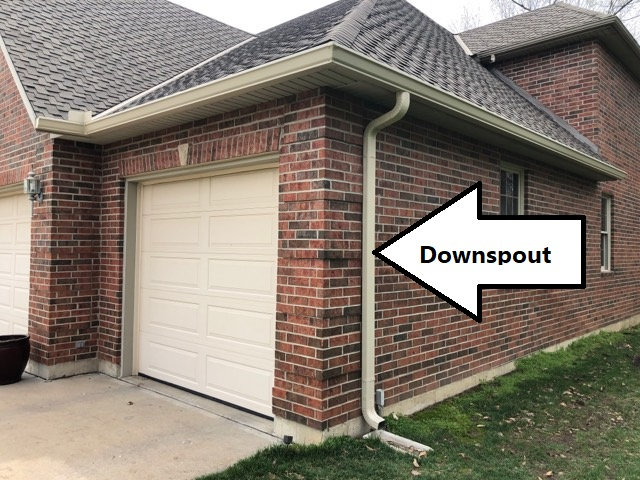בבתים עם יסודות מסוג SLAB אין מרתף. הבית יושב על משטח בטון יצוק, שהוא הבסיס לבית. למעשה רק הצנרת מחוברת למשטח היסודות ומכאן גם החסרון הגדול של סוג זה, קשה מאוד לתקן נזילות. סוג זה מאוד פופולארי בבניה חדשה מפני שהוא זול, מהיר לביצוע ואין אויר בין היסודות לבית ולכן יורד משמעותית הסיכוי לעובש.

מרתף חפור נותן בסיס טוב יותר לבית והוא נחפר לעומק של 8 רגל מתחת לגובה הבית. בנוסף, הרבה בעלי בתים אוהבים את העובדה שיש להם מרתף בבית, אם הוא לא גמור (כלומר לא ראוי למגורים) הוא משמש כשטח אחסון מעולה. ואם המרתף גמור (FINISHED) הוא משמש כשטח מגורים נוסף.
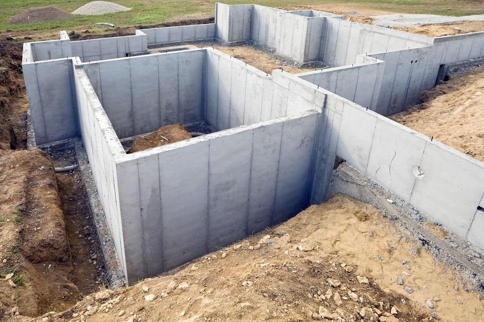כדי שהמרתף יחשב ל-SQFT של הבית חייב להיות פתח מילוט (EGRESS) בכל חדר במרתף, במידה ויש חדרים בגודל של 28X30 אינצ' אם זה חלון עומד ו-20X24 אינצ' אם זה חלון שוכב.

הכוונה לחלונות עץ ישנים. אלו חלונות עם מסגרת עץ שככול הנראה רקובה חלקית מפני שאלו חלונות מאוד ישנים, יש לתחזק אותם על בסיס שנתי, קילוף הצבע הישן, שייוף וצביעה מחדש. חלונות אלה מחוברים לזכוכית אחת שברוב המקרים לא תיהיה בכלל זכוכית אלה סוג של פלסטיק. הבידוד מאוד גרוע בחלונות האלה ולרוב קשה מאוד להזיז אותם.
גם כאן הכוונה לחלונות ישנים עם זכוכית אחת, חלונות אלה יכולים להיות במצב טוב ואם זה רנטל, שווה לשקול להשאיר אותם.
חלונות חדשים יחסית, עם זכוכית כפולה ולכן יש בידוד טוב יותר. כמובן שקל יותר לתפעל אותם וכמעט שאין תחזוקה לחלונות אלו. אלו חלונות מאוד פופולארים בבתים עד שווי של $300,000. יש מספר רמות איכות ותצטרכו להתאים את רמת האיכות של חלונות הוייניל לשווי הבית.